?
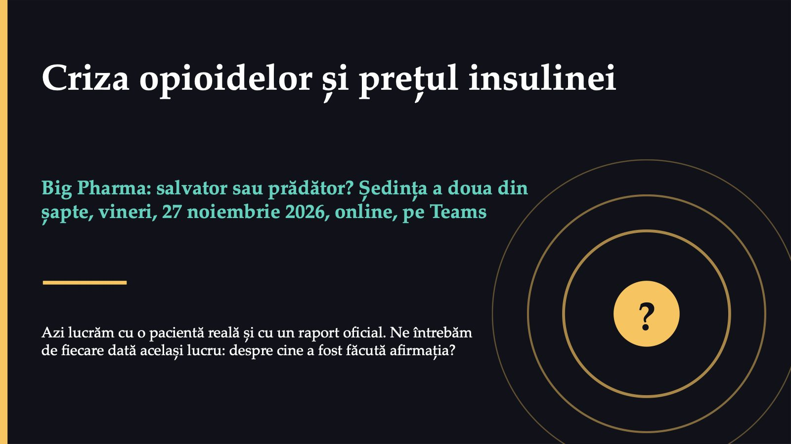
1 / 48Bună ziua. Ședința trecută ați învățat o regulă: înainte de a folosi o cifră, întrebați ce numără. Azi adăugăm a doua întrebare: despre cine a fost făcută afirmația? O propoziție poate fi corectă pentru pacienții despre care a fost scrisă și greșită pentru toți ceilalți.
O întrebare, înainte de orice
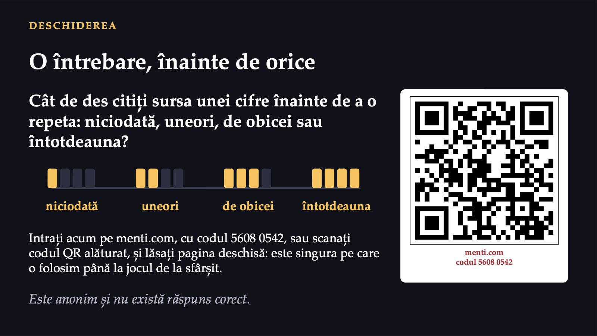
2 / 48Nu vă judec răspunsul. Vreau doar să vedem de unde pornim azi. La sfârșitul ședinței veți ști de ce întrebarea contează.
Teza de azi
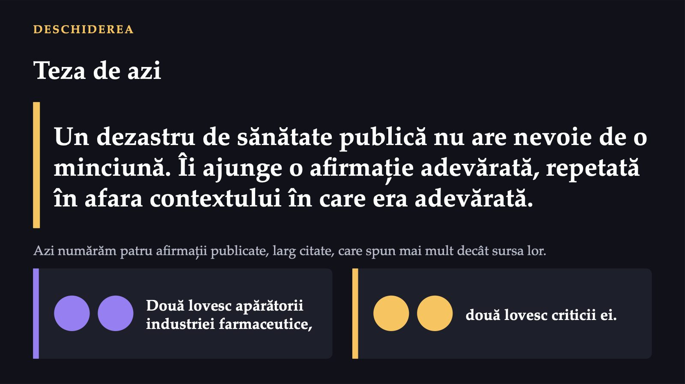
3 / 48Verificăm teza de două ori: o dată cu opioidele, o dată cu insulina. Ședința trecută au fost șase afirmații de acest fel; azi sunt patru și le marcăm pe rând, cu ce spune, de fapt, sursa. De la ședința a treia nu le mai anunț: le căutați singuri.
O pacientă de 75 de ani
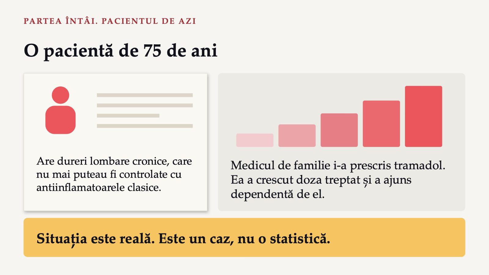
4 / 48Situația este reală și o povestesc fără niciun detaliu după care persoana ar putea fi recunoscută. Este un caz, nu o statistică: arată că dependența se poate produce, nu cât de des se produce. Ne vom întoarce la această diferență.
Ce știm și ce nu știm
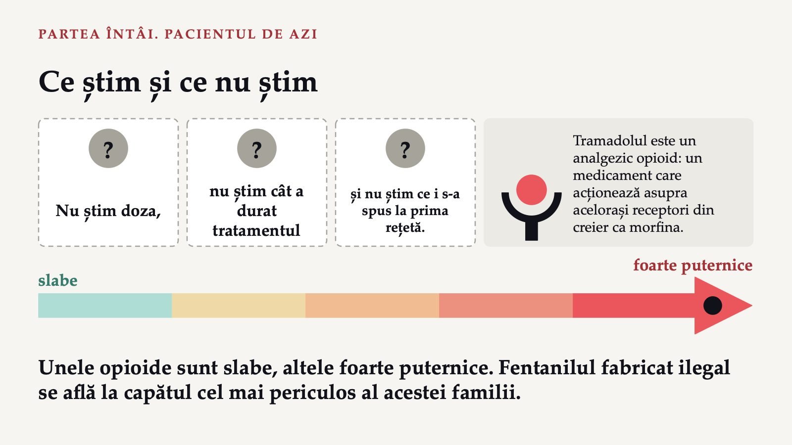
5 / 48Nu voi adăuga nimic la poveste, nici doza, nici durata. Situația e bună pentru un început tocmai pentru că e scurtă: câteva propoziții și o decizie de luat azi.
Sunteți medicul ei, la următoarea consultație
![PARTEA ÎNTÂI. PACIENTUL DE AZI Sunteți medicul ei, la următoarea consultație Lucrați în grupuri de patru–cinci, în camerele de lucru din Teams, cincisprezece minute. Scrieți ce îi spuneți, în cuvinte pe care le înțelege o femeie de 75 de ani, fără termeni de specialitate. Trei răspunsuri scurte, de cel mult 200 de caractere fiecare: 1. Ce îi spuneți despre ce s-a întâmplat? 2. Ce îi propuneți de acum înainte? 3. Ce nu îi promiteți? La întoarcere, cele trei întrebări apar pe rând în pagina Mentimeter; un membru al grupului trimite răspunsurile.](diapozitive/C02/006.jpg) 6 / 48
6 / 48Nu există un text corect dat dinainte. După cele cincisprezece minute citim două sau trei texte și le comparăm. Gândiți-vă ce vrea ea să afle, nu ce vreți voi să-i explicați.
Un cuvânt sau două
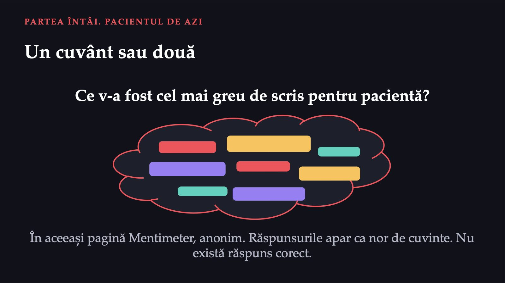
7 / 48Un minut. Scrieți ce v-a blocat: un cuvânt, o idee, o propoziție pe care n-ați știut cum s-o spuneți.
?
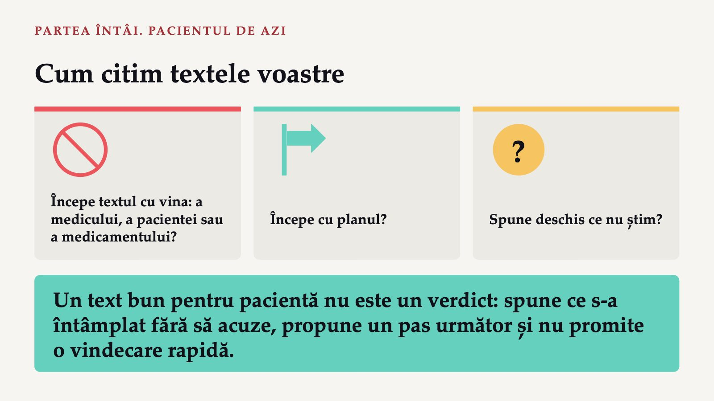
8 / 48Ce anume îi propuneți, medical, nu este tema acestui curs. Tema este de unde a venit încrederea că un opioid luat luni la rând este o alegere sigură.
Ce spun azi ghidurile
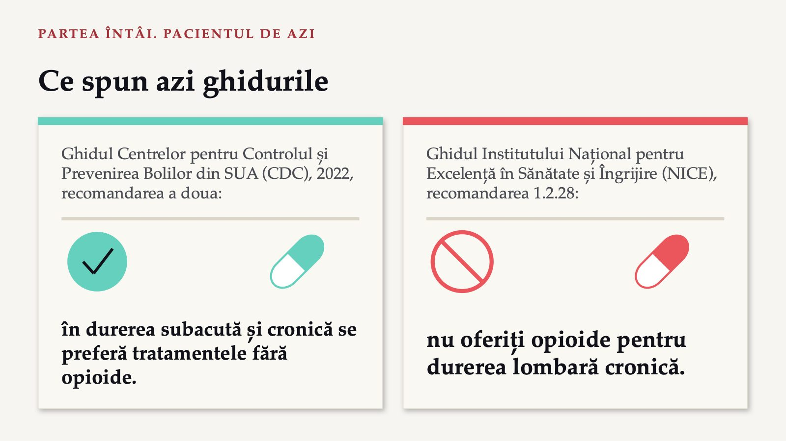
9 / 48Ghidul american adaugă că opioidele se iau în considerare numai dacă beneficiile așteptate pentru durere și pentru funcție depășesc riscurile. Pentru durerea lombară cronică, după un răspuns insuficient la metodele fără medicamente, cum este exercițiul fizic, medicul poate lua în considerare antiinflamatoarele nesteroidiene sau duloxetina, cu prudență mai ales la vârstnici. Ghidul NICE admite opioidele slabe numai în durerea lombară acută, când un antiinflamator este contraindicat, nu este tolerat sau nu a avut efect, la recomandarea 1.2.25. Ghidurile nu spun că medicul pacientei a greșit: nu știm ce a cântărit el la prima rețetă și nu judecăm o decizie fără documentele ei.
Ce nu spune sinteza găsită despre tramadol
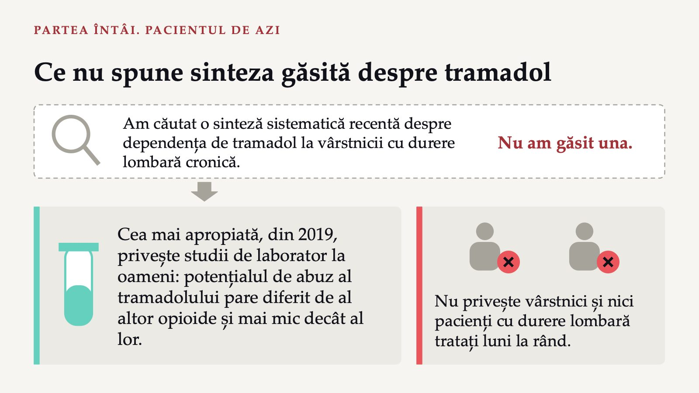
10 / 48Primul test al tezei ni se aplică chiar nouă. Nu ascundem nepotrivirea dintre această sinteză și situația pacientei.
Două propoziții adevărate, fiecare în contextul ei
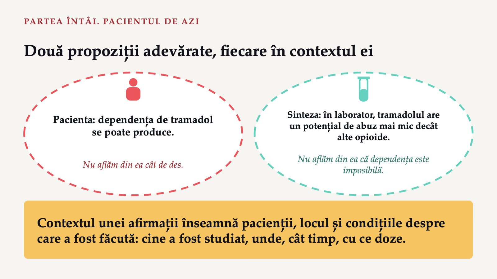
11 / 48Greșeala ar fi să scoatem oricare dintre ele din context: să spunem, pornind de la pacientă, că tramadolul creează dependență ca orice opioid, sau, pornind de la sinteză, că nu creează dependență. Mutată la alți pacienți, o afirmație adevărată în contextul ei devine o presupunere. Aceasta este, în mic, lecția întregii ședințe.
O scrisoare din 1980
![PARTEA ÎNTÂI. PACIENTUL DE AZI O scrisoare din 1980 New England Journal of Medicine (NEJM), 1980. Jane Porter și Hershel Jick verifică fișierele a 39 946 de pacienți internați pe secții medicale; 11 882 primiseră cel puțin un preparat narcotic. Găsesc patru cazuri de dependență „rezonabil documentată”, la pacienți fără antecedente de dependență. 39 946 11 882 patru cazuri „We conclude that despite widespread use of narcotic drugs in hospitals, the development of addiction is rare in medical patients with no history of addiction.” (Porter și Jick, 1980, p. 123) în ciuda folosirii pe scară largă a drogurilor narcotice în spitale, apariția dependenței este rară la pacienții medicali fără antecedente de dependență.](diapozitive/C02/012.jpg) 12 / 48
12 / 48De unde a venit, în ultimele decenii ale secolului trecut, încrederea că opioidele dau rar dependență? Unul dintre răspunsuri este această scrisoare. Autorii lucrau într-un program de supraveghere a medicamentelor la un centru universitar din Boston. Tradusă cuvânt cu cuvânt, concluzia spune: în ciuda folosirii pe scară largă a drogurilor narcotice în spitale, apariția dependenței este rară la pacienții medicali fără antecedente de dependență.
Ce spune propoziția și ce nu spune
![PARTEA ÎNTÂI. PACIENTUL DE AZI Ce spune propoziția și ce nu spune „We conclude that despite widespread use of narcotic drugs in hospitals, the development of addiction is rare in medical patients with no history of addiction.” (Porter și Jick, 1980, p. 123) Spune: „în spitale”. Spune: „pacienți medicali”, adică internați pe secții medicale. Spune: „fără antecedente de dependență”. Nu spune nimic despre durerea cronică, nimic despre pacienții care iau opioide acasă și nimic despre cât au durat tratamentele.](diapozitive/C02/013.jpg) 13 / 48
13 / 48Comparați cu pacienta noastră: nu este internată, ia medicamentul acasă, luni la rând. Propoziția din 1980 nu spune nimic despre ea.
Scrisoarea către editor
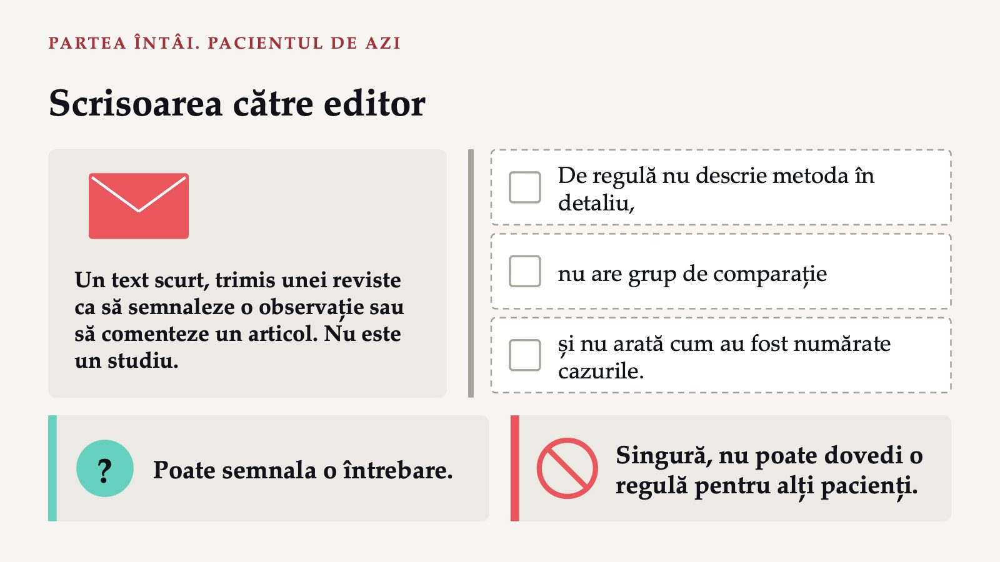
14 / 48Despre scrisoarea din 1980, autorii unei analize din 2017 scriu că nu a adus nicio dovadă pentru afirmația generală pe care alții au sprijinit-o pe ea.
Cum a fost citată scrisoarea
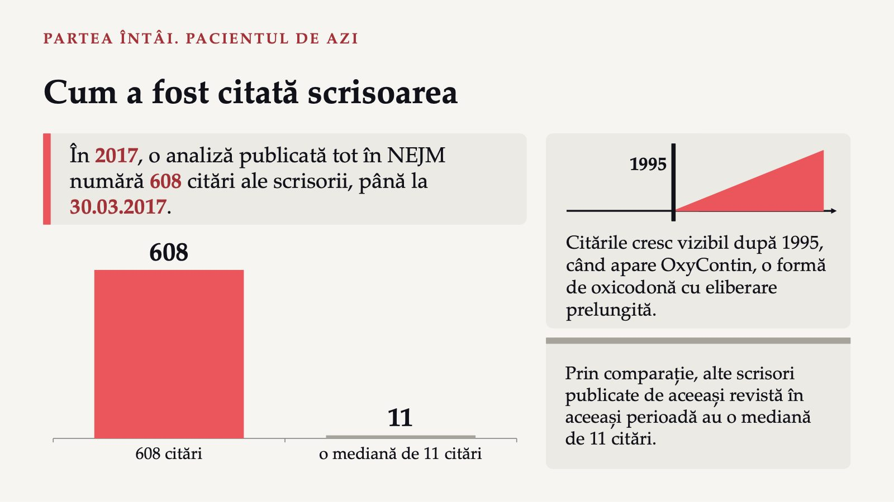
15 / 48Analiza a fost făcută de un grup de medici și farmacologi. Mediana înseamnă valoarea din mijloc: jumătate dintre celelalte scrisori au avut mai puțin de atât, jumătate mai mult.
Ce au spus cei care au citat-o
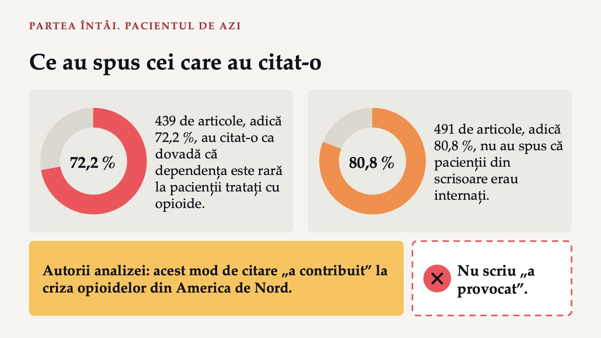
16 / 48Altfel spus, cam opt din zece nu au spus că pacienții erau internați. Analiza spune că modul de citare a ajutat la construirea unei povești care a liniștit temerile medicilor față de riscul de dependență în tratamentul de lungă durată. Ulterior, revista a pus deasupra scrisorii o notă a editorului: din motive de sănătate publică, cititorii trebuie să știe că scrisoarea a fost citată „masiv și necritic” ca dovadă că dependența este rară în tratamentul cu opioide.
Afirmația 1 din 4
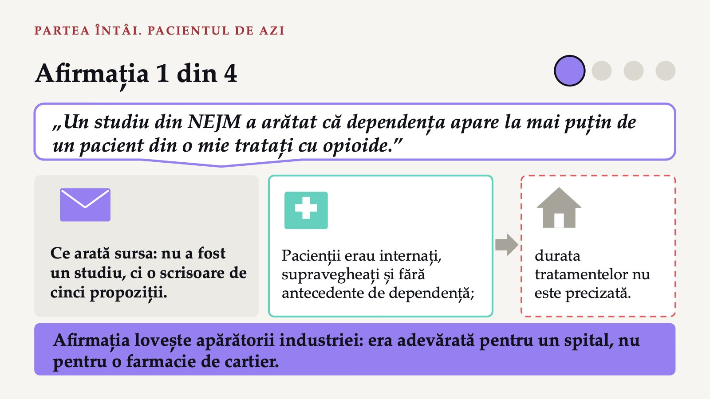
17 / 48Afirmația a circulat, în variante, ani la rând, ca argument pentru prescrierea opioidelor în durerea cronică. Principiul general: înainte de a folosi o cifră despre risc, aflați la ce pacienți a fost măsurată. Un risc mic într-un spital, sub supraveghere, nu se mută automat acasă.
Purdue: trei momente juridice, trei afirmații diferite
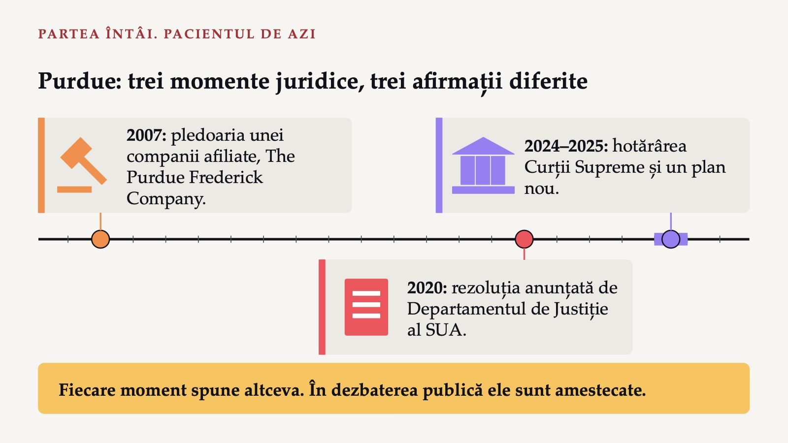
18 / 48Se aude des că o scrisoare de o sută de cuvinte a declanșat criza opioidelor. Nu o numărăm printre cele patru afirmații ale zilei, dar o corectăm: analiza din 2017 spune că modul de citare a contribuit, alături de altele, la criză. Aceeași analiză amintește, într-o singură frază, că în 2007 producătorul OxyContin și trei directori ai lui au pledat vinovați la acuzații penale federale. Formularea este a analizei, nu a instanței. O poveste cu o singură cauză este ușor de ținut minte și, de obicei, incompletă. OxyContin a fost produs de Purdue; să vedem ce spune fiecare dosar.
2007: pledoaria
![PARTEA ÎNTÂI. PACIENTUL DE AZI 2007: pledoaria The Purdue Frederick Company pledează vinovată de etichetarea înșelătoare a OxyContin, cu intenția de a frauda sau de a induce în eroare. 12.12.1995–30.06.2001 2007 Actul de acuzare, pentru 12.12.1995–30.06.2001: OxyContin a fost prezentat ca mai puțin adictiv și mai puțin expus abuzului decât alte medicamente pentru durere. Compania acceptă că faptele sunt adevărate. Trei directori pledează vinovați de o infracțiune de gravitate mai mică, numai ca directori responsabili. Nu sunt acuzați că ar fi știut personal sau că ar fi avut intenția de a frauda.](diapozitive/C02/019.jpg) 19 / 48
19 / 48Cauza s-a aflat pe rolul unei instanțe federale din statul Virginia, potrivit legii federale privind alimentele, medicamentele și cosmeticele. Directorii nu au acceptat că ar fi cunoscut faptele din actul de acuzare, dar au acceptat ca instanța să le folosească în sprijinul pledoariilor lor. Acesta este dosarul care privește direct afirmațiile despre riscul de dependență.
2020: rezoluția
![PARTEA ÎNTÂI. PACIENTUL DE AZI 2020: rezoluția La 21.10.2020, Departamentul de Justiție al SUA anunță o rezoluție globală a investigațiilor penale și civile privind Purdue Pharma. Compania acceptă să pledeze vinovată de conspirație pentru fraudarea Statelor Unite și de conspirație de încălcare a legii federale împotriva mitei în sănătate. Capetele de acuzare nu privesc afirmațiile despre dependență. OxyContin maker Purdue Pharma pleads guilty in criminal case (CBS News, 2020) Sumele din comunicat: amenda penală, 3,544 miliarde de dolari; confiscarea penală, 2 miliarde; acordul civil, 2,8 miliarde. Familia Sackler, separat: 225 de milioane.](diapozitive/C02/020.jpg) 20 / 48
20 / 48Precis: o conspirație cu dublu obiect, fraudarea Statelor Unite și încălcarea legii federale privind alimentele, medicamentele și cosmeticele, și două capete de conspirație de încălcare a legii federale împotriva mitei în sănătate. Capetele privesc înșelarea agenției federale antidrog și mita. Potrivit comunicatului, Purdue a declarat agenției federale antidrog că are un program eficient împotriva deturnării, în timp ce își promova produsele la peste 100 de furnizori despre care avea motive întemeiate să creadă că deturnau opioide. Comunicatul vorbește de o înțelegere federală de peste 8 miliarde de dolari. Cifra de 8,344 miliarde, rotunjită ca 8,3, este suma celor trei componente, calculată de noi; nu este tipărită ca total. Rezoluția nu eliberează de răspundere penală persoanele fizice, iar în afara recunoașterilor companiei pretențiile civile rămân acuzații.
2024–2025: Curtea Supremă și planul nou
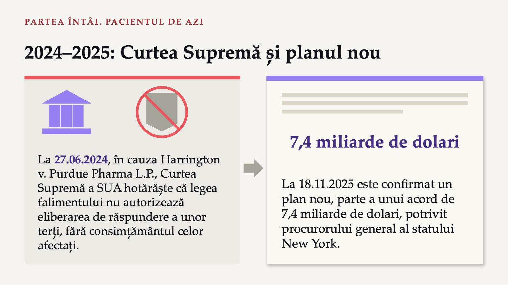
21 / 48Planul vechi de reorganizare includea o protecție juridică pentru membrii familiei Sackler, care nu erau ei înșiși în faliment. Potrivit comunicatului din 2025, familia Sackler va plăti 1,5 miliarde, iar Purdue circa 900 de milioane la prima plată, așteptată la începutul lui 2026, cu condiția aprobării acordului. O cifră juridică are și ea un context: cine a plătit, pentru ce faptă și la ce dată. Sumele dintre 2020 și 2025 descriu acorduri diferite, cu alte părți.
806 000
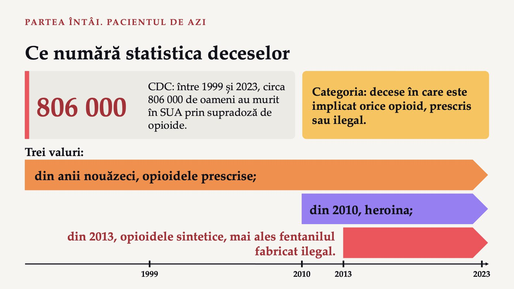
22 / 48În 2023 au murit prin supradoză de droguri circa 105 000 de oameni; aproape 80 000 dintre aceste decese, circa 76 %, au implicat opioide. Între 2022 și 2023, rata deceselor cu opioide prescrise a scăzut cu aproape 12 %.
Decesele cu implicarea unui opioid
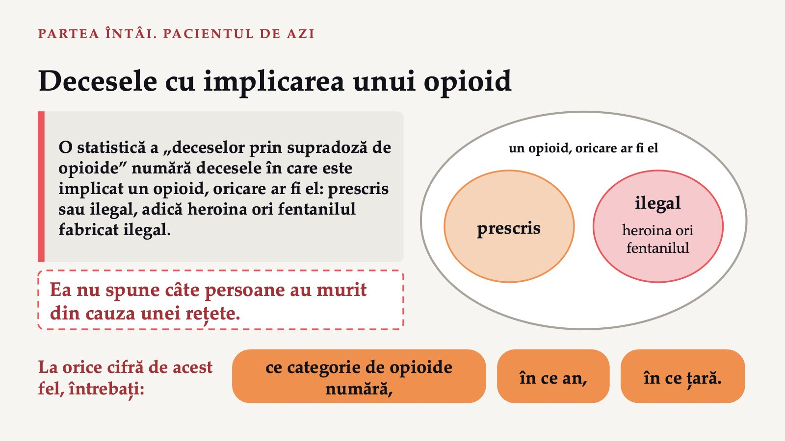
23 / 48Exemplul de azi: circa 806 000 de decese între 1999 și 2023 înseamnă decese cu orice opioid, nu decese cauzate de opioidele prescrise.
Afirmația 2 din 4
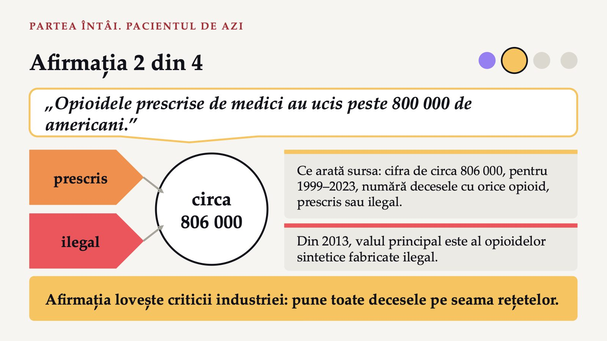
24 / 48Categoria contează la fel de mult ca cifra. Aceeași corecție se aplică și în sens invers: faptul că fentanilul ilegal domină azi decesele nu spune nimic despre începutul crizei. Primul val, potrivit aceleiași surse, a pornit de la prescriere. Cine apără industria cu argumentul că azi mor oamenii de fentanil ilegal scoate și el o cifră adevărată din contextul ei.
Și în România?
 25 / 48
25 / 48Cifrele vin de la casa de asigurări și privesc numai spitalele. O unitate terapeutică nu este un pacient: același pacient poate primi multe. Iar agenția medicamentului nu are o bază proprie cu date de consum, după o lucrare din 2023 a unor cercetători ai universității noastre. Și nu știm de ce a crescut: pot fi mai multe internări, mai mulți pacienți sau doze mai mari.
Pauză, cinci minute
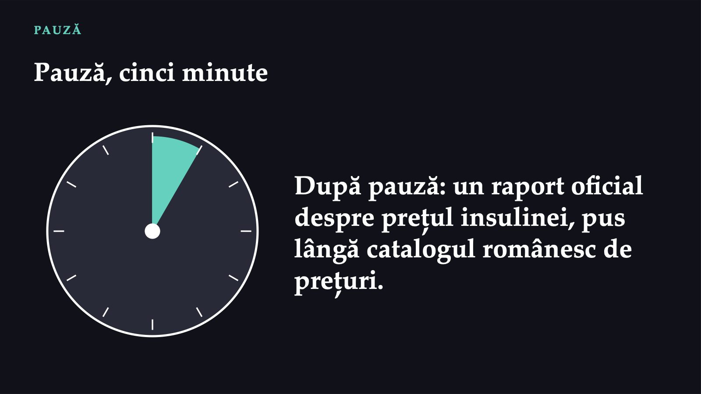
26 / 48Ne revedem în cinci minute.
Un medicament vechi de un secol
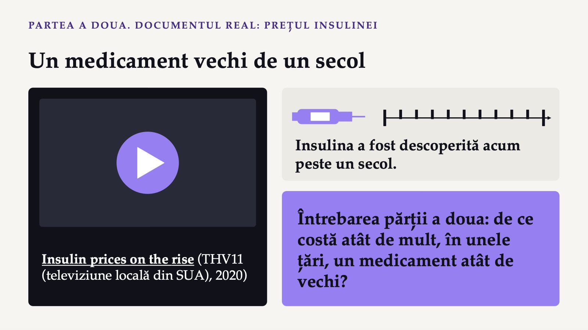
27 / 48Raportul pe care îl citim azi o spune chiar în titlu: un medicament vechi de un secol, al cărui cost crește.
Ce citim
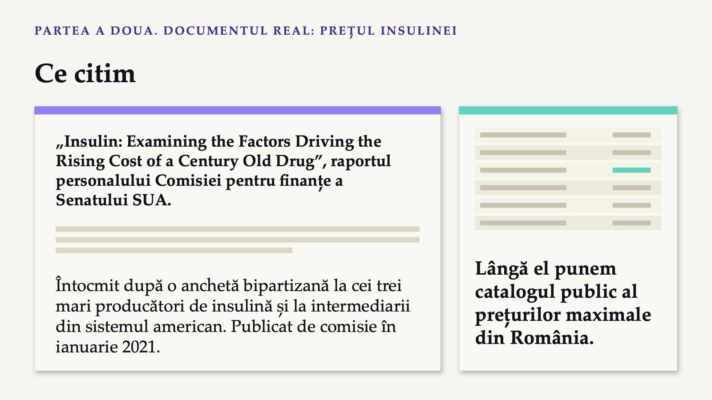
28 / 48Tipăritura oficială de pe govinfo.gov este înregistrată în 2020; comisia a publicat raportul în ianuarie 2021. Citim trei pasaje: prețul de listă, de ce urcă el și brevetele.
peste 33 %
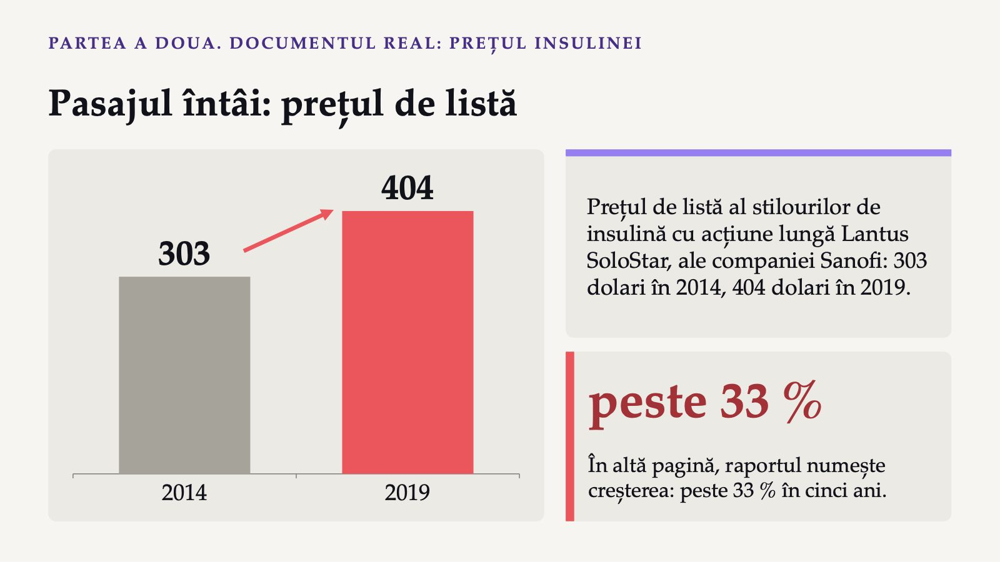
29 / 48Prețul de listă este prețul anunțat de producător, înainte de orice reducere; în SUA, raportul îl numește prețul de achiziție angro.
Prețul de listă și prețul net
![PARTEA A DOUA. DOCUMENTUL REAL: PREȚUL INSULINEI Prețul de listă și prețul net Prețul de listă: anunțat de producător, înainte de reduceri. Prețul net: ce încasează efectiv producătorul, după reducerile negociate cu intermediarii și cu asigurătorii. ? Pacientul plătește o a treia sumă, care depinde de asigurarea lui. Exemplu: prețul de listă al unui stilou Humalog KwikPen aproape s-a dublat între 2015 și 2018; prețul net mediu pe stilou a scăzut de la 28 la 24 de dolari, potrivit datelor raportate de Eli Lilly. aproape s-a dublat](diapozitive/C02/030.jpg) 30 / 48
30 / 48Ați întâlnit distincția în ședința întâi, la semaglutid. Azi o aplicăm unui medicament vechi.
Pasajul al doilea: de ce urcă prețul de listă
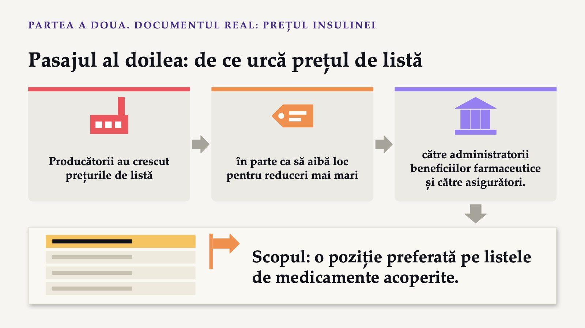
31 / 48Raportul mai observă că creșterile au fost adesea apropiate în timp de schimbările de preț ale concurenților. Pentru pacientul american fără asigurare, sau cu o asigurare care calculează contribuția pornind de la prețul de listă, contează prețul de listă, nu cel net. De aceea aceeași propoziție, prețul a crescut, poate fi adevărată pentru pacient și înșelătoare pentru veniturile producătorului.
Pasajul al treilea: brevetele
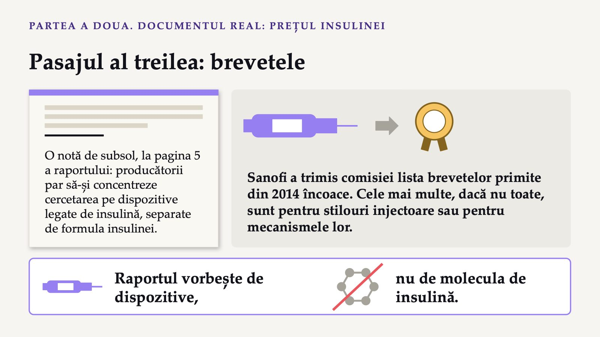
32 / 48Tot acolo, raportul notează că brevetul Sanofi pe insulina glargin a expirat în 2014. Raportul adaugă și un motiv pentru lipsa unei alternative mai ieftine: insulina este un produs biologic, obținut din celule vii, o moleculă complexă, greu de fabricat la scară mare.
Trei propoziții pentru un pacient cu diabet
![PARTEA A DOUA. DOCUMENTUL REAL: PREȚUL INSULINEI Trei propoziții pentru un pacient cu diabet Pacientul vă întreabă: „De ce aceeași insulină costă în America de câteva ori mai mult decât la noi?” În grupuri, în camerele de lucru din Teams, cincisprezece minute. Aveți cele trei pasaje și un rând din catalogul românesc: Lantus SoloStar, cinci stilouri a câte trei mililitri, preț maximal cu amănuntul, cu TVA, 230,07 lei. Condiții: fiecare propoziție are cel mult douăzeci și cinci de cuvinte; fiecare cifră are anul și spune ce preț este; nicio propoziție nu acuză pe cineva fără document. Păstrați propozițiile: un membru al grupului le trimite în Mentimeter după ce discutăm cele patru afirmații și catalogul.](diapozitive/C02/033.jpg) 33 / 48
33 / 48Pasajele și rândul din catalog sunt și în conversația ședinței. Prețul din catalog este cel de la 1 august 2025.
Afirmația 3 din 4
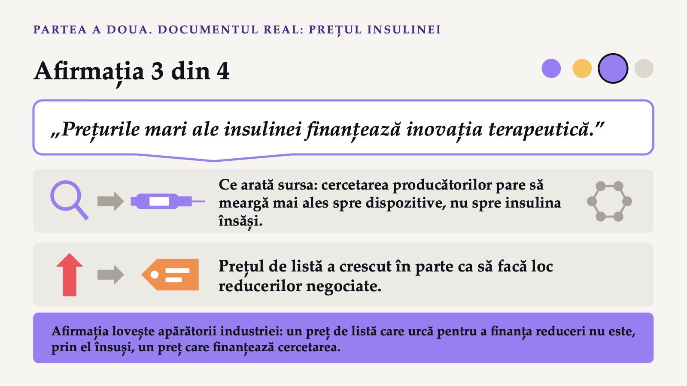
34 / 48Principiul general: când cineva spune că prețul plătește inovația, întrebați ce inovație, cu ce preț și pentru cine.
Aceeași insulină, în alte țări
![PARTEA A DOUA. DOCUMENTUL REAL: PREȚUL INSULINEI Aceeași insulină, în alte țări Organizația americană de cercetare RAND compară prețurile insulinei din SUA cu cele din țările Organizației pentru Cooperare și Dezvoltare Economică (OCDE). Raportul din 2024, pe date din 2022: prețurile brute de producător din SUA sunt de 9,71 ori mai mari; după reducerile estimate, prețurile nete rămân de 2,33 ori mai mari. Pentru 100 de unități internaționale: 22,68 dolari în SUA, 2,37 dolari în celelalte țări OCDE; prețul net american estimat, 5,42 dolari.](diapozitive/C02/035.jpg) 35 / 48
35 / 48A doua cifră este o estimare: autorii au aplicat prețurilor americane o reducere medie estimată în alt studiu, iar prețurile celorlalte țări nu au fost ajustate, din lipsa datelor. Raportul anterior, din 2020, pe date din 2018, dădea 8,1 ori, fără ajustare pentru reduceri; cu o reducere presupusă de 50 %, prețurile americane ar fi rămas de circa patru ori mai mari.
Afirmația 4 din 4
![PARTEA A DOUA. DOCUMENTUL REAL: PREȚUL INSULINEI Afirmația 4 din 4 „Insulina costă de opt ori mai mult în SUA decât în alte țări dezvoltate.” Afirmația lovește criticii industriei: diferența este reală și mare, dar „de opt ori” descrie prețul de listă, nu prețul plătit. Ce arată sursa: cifra vine din raportul RAND pe date din 2018 și privește prețurile de producător, înainte de reduceri. Cu o reducere presupusă de jumătate, diferența ar fi fost de circa patru ori. Pe datele din 2022, diferența netă estimată este de 2,33 ori.](diapozitive/C02/036.jpg) 36 / 48
36 / 48Formularea apare, fără precizări, chiar în rezumatul raportului RAND din 2020: „about eight times higher”. Principiul general: la orice comparație de prețuri, întrebați ce preț se compară, în ce an și cu ce țări.
70 %
![PARTEA A DOUA. DOCUMENTUL REAL: PREȚUL INSULINEI Ce s-a schimbat din 2023 70 % La 1.03.2023, Eli Lilly anunță reducerea cu 70 % a prețului de listă pentru Humalog și Humulin. 78 % La 16.03.2023, Sanofi anunță reducerea cu 78 % a prețului de listă pentru Lantus, de la 1.01.2024. 35 de dolari Pentru persoanele asigurate prin Medicare, Partea D: contribuția pacientului plafonată la 35 de dolari pentru necesarul unei luni, pentru fiecare insulină acoperită, de la 1.01.2023. 1.01.2023 1.03.2023 16.03.2023 1.01.2024](diapozitive/C02/037.jpg) 37 / 48
37 / 48Pentru insulina dată printr-o pompă tradițională, acoperită prin Partea B, plafonul se aplică de la 1.07.2023. Potrivit raportului RAND din 2024, după aceste reduceri prețurile de listă urmau să devină practic egale cu prețurile nete. Observați ceasul cifrelor: un preț de listă citat corect pentru anii raportului nu mai descrie situația de după reduceri.
Catalogul românesc
 38 / 48
38 / 48Un biosimilar este un medicament biologic foarte asemănător cu un medicament biologic deja autorizat, numit de referință, potrivit Agenției Europene a Medicamentului; mici diferențe pot exista, iar Agenția le socotește nerelevante clinic. În Uniunea Europeană, dacă un biosimilar poate fi dat la farmacie în locul originalului hotărăsc statele membre, nu Agenția. Două precauții: catalogul dă un preț maximal cu amănuntul, nu un preț de producător ca la RAND și nici un preț net; și nu am convertit lei în dolari, pentru că nu am fixat un curs de schimb cu sursă. Calculul pe 100 de unități este al nostru, din concentrație și volum.
Cum citim cele trei propoziții
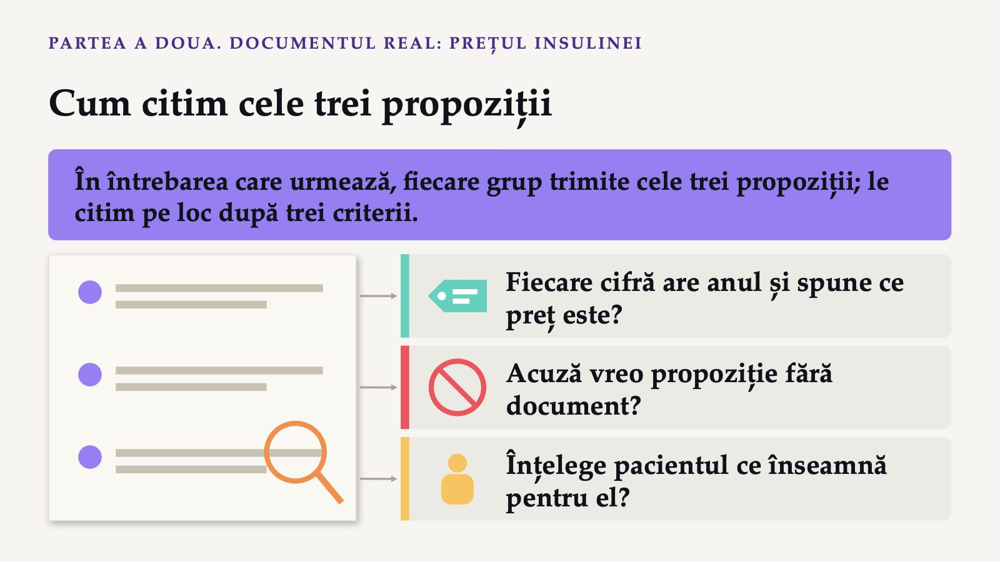
39 / 48Ați exersat exact ce se notează la dezbateri: o cifră cu anul ei și cu ce anume numără.
Răspunsul apare după ședință
Răspunsul apare după ședință
Părerea voastră
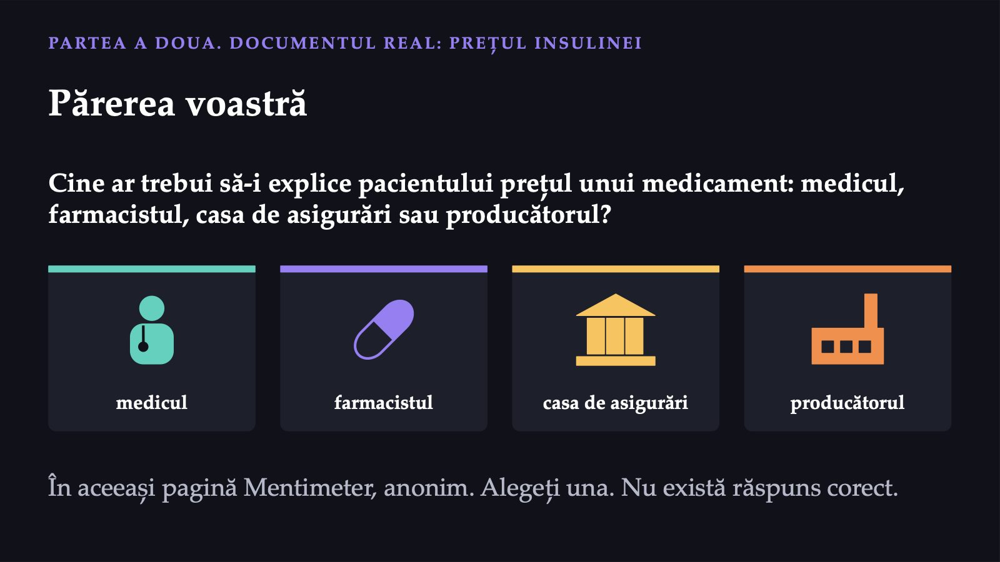
41 / 48Rezultatul îl arătăm o singură dată și îl discutăm.
Ce v-a surprins cel mai mult azi?
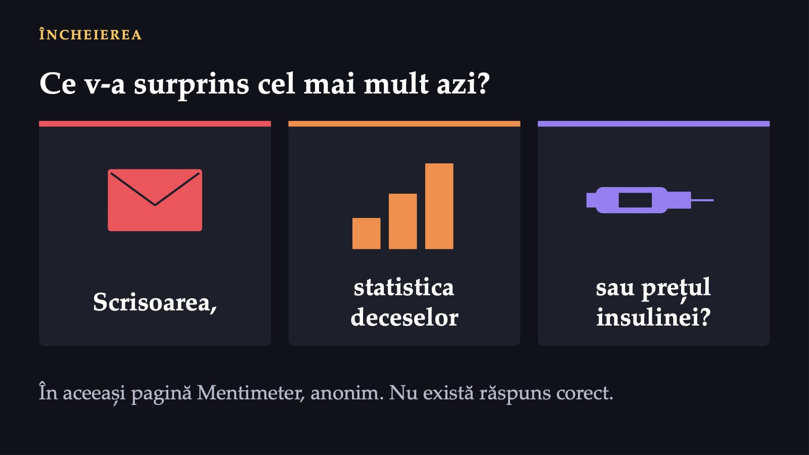
42 / 48Un minut. Am numărat azi patru afirmații: două loveau apărătorii industriei, două loveau criticii ei.
Vinerea viitoare: prima dezbatere evaluată
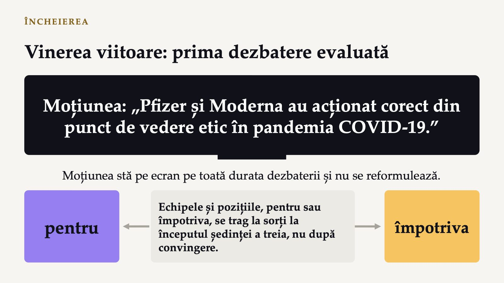
43 / 48Cine consideră că nu poate susține poziția atribuită din motive de conștiință îmi spune înainte de tragere și primește o sarcină înlocuitoare: un eseu argumentativ de 600 de cuvinte pe moțiune, notat pe aceeași grilă. Refuzul motivat nu se penalizează; se penalizează numai neparticiparea nemotivată.
25 %
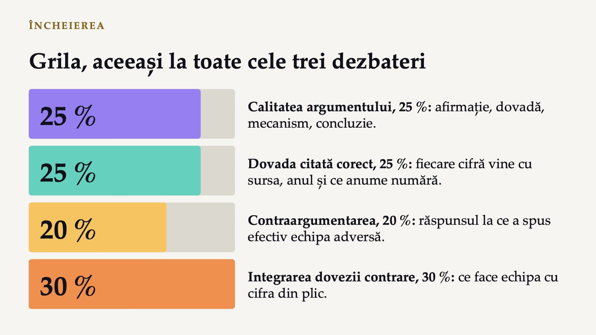
44 / 48Se punctează coerența, nu convingerea. O cifră fără an nu se punctează. Media celor trei dezbateri este jumătate din nota finală; cealaltă jumătate este analiza de politică publică din ședința a șaptea.
Plicul și juriul
 45 / 48
45 / 48Juriul: titularul, un invitat din afara universității și un al treilea jurat din mediul academic sau clinic, fără relație contractuală declarată cu industria farmaceutică în ultimii trei ani. Pentru dezbaterea despre vaccinuri, întrebați aceleași lucruri ca azi: despre cine a fost făcută afirmația, ce preț sau ce sumă numără cifra, în ce an. Îl vede toată lumea; echipa căreia îi este adresat îl folosește în intervenția următoare.
O promisiune
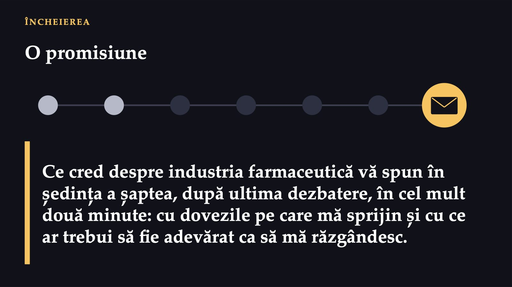
46 / 48Nu mai devreme, și motivul este practic: dacă îmi cunoașteți poziția din săptămâna a doua, analiza de politică publică riscă să fie scrisă pentru mine, nu pentru problema voastră.
Kahoot
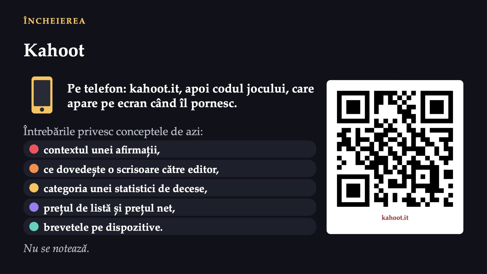
47 / 48Circa opt minute. Nu se notează; e exercițiu pentru dezbatere.
Ce faceți diferit, luni dimineață
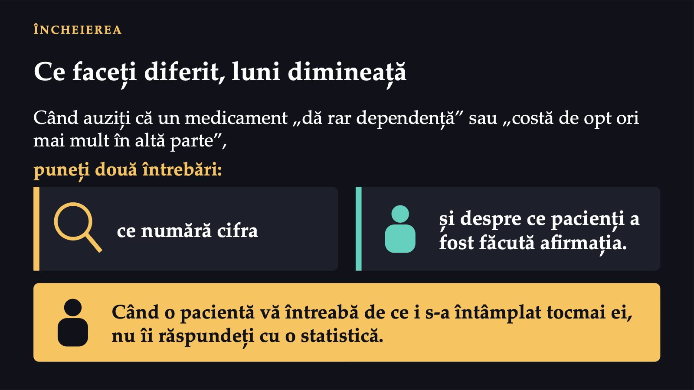
48 / 48O statistică descrie mulți oameni; pacienta din fața voastră este una singură. Ne vedem vinerea viitoare, la prima dezbatere.
Săgeți sau spațiu: navigare · O: vedere de ansamblu · N: notele prezentatorului · F: ecran complet · Esc: închidere